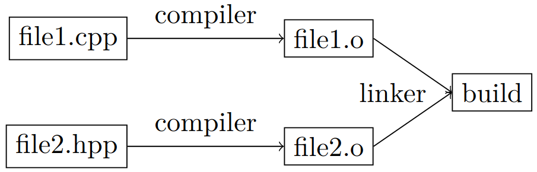

C++
Most of the notes here are from reading the book Programming Principles and Practice Using C++ from Bjarne Stroustrup.
Hello World
Create a file helloworld.cpp with
std). Then, the main function
is declared: in every C++ program, it is the function
called at execution. Every function (here main) has
a return type (int), a name (main), a parameter list
(empty) and a body enclosed by curly braces.
In C++, source code has the extension .cpp, object code (output of compiler) has extension .obj on Windows and .o on Linux, and executable has extension .exe on Windows and no extension on Linux.

To compile (on linux) and then execute,
where-o is used to specify the output file name. Additional flags can be passed, for example
where -g allows debuggers like GDB to map executable code back to source code, and -Wall enables compiler warnings. -O2 specifies the level of optimization,
-O0: no optimization (default)-O1: Basic optimization-O2: Optimization recommended for release build-O3: Maximum optimization (rarely introduces bugs)Os: Optimizes for executable code size
Makefile
A Makefile is a file named Makefile with no extension, in the source folder. It contains compilation rules with a target (executable to be created ,hello), dependencies (other files the target depends on) and compilation command.
Example 1
Example 2
CC = gcc
CFLAGS = -Wall -g -O2
helloworld: helloworld.c
$(CC) $(CFLAGS) hello.c -o hello
clean:
rm -f helloworld
CC and CFLAGS are variables to define the compiler to use and compilation flags. clean is a special target for deleting the exectuable.Executing
make in the source directory compiles helloworld.cpp.Executing
make clean deletes the executable.See also itsfoss article on compilation.
Declaration, definition and scope
Declaration
A declaration introduces a name into a scope, and specifies its type (and input parameters for a function), it does not allocate memory. Names can only be used after having been declared, otherwise the compilation fails. A forward declaration is used for example when multiple functions call on another and it is impossible to define functions before they are used.
double fcn2(); // forward declaration of fcn2
double fcn1(); // definition of fcn1
{
// computations...
fcn2(); // call to fcn2
}
double fcn2() // definition of fcn2
{
// computations...
fcn1(); // call to fcn1
}
Definition
A definition is a declaration that also fully describes the entity declared (e.g. a variable with its initialization value, a function with its computation).
Scope
A scope restricts the use of variables, functions, etc. to limited portions of the program. Some examples are
- The global scope is the part of code outside any other scope.
- A namespace, defined as
and used as
or if no clash is expected with other names,
it is however best practice to not include too many namespaces with
usingdirectives. - A function body is a local scope, it includes its parameter names.
- A class definition, in which names can be used before their declaration, and their accessibility is further controlled by
public,privateandprotectedkeywords. - Statement block in
for,while,iforswitch - Blocks
{ ... }
Common types of variables
Variables are named data stored in memory. Variables have a specific type that determines what kind of values it can hold, and which operators can be applied to it. In this section, only built-in types are covered, while user-defined types are adressed later (classes and enumerations). Good practice is to always initialize variables (except for strings, automatically initialized empty).
int nb_steps = 40; // integers
double length = 22.5; // floating-point number
char decimal_pt = ’.’; // individual character
string usr_name = "John"; // character string
bool stop = false; // logical variable
constexpr double pi=3.14159 // cannot be changed,
must be known at compile time
const double c3=n // cannot be changed
auto maxiter = 100; // auto type deduction (int)
Constants are variables whose value cannot change,
they have to be initialized with their value. Use
constexpr if it is known at compile-time, or const
if it is known at execution and then never changes.
constexpr double pi = 3.14159; // compile-time const
const int nb_max = 7; // run-time const
const int nb_max {7}; // alternative synthax
Operations on types bool, char, int, double, string
For all of these, we have operations
int a = 40; // assignement
b = double{a}; // widening conversion
cin >> a; // read from cin into a
cin << a; // write a to cout
b = f(a); // function call
b = f<T>(a); // function template call
int sq = [](int x){return x^2}; // lambda expr
c = x==y; // equals
c = x!=y; // not equal
c = x>y; // greater than, also >=, <, <=
c = !x; // not
bool have other logical operators
Such comparisons are evaluated left-to-right.int and double have operations +, -, *, /, and
a = x+y; // also -, *, /
x++; // pre-increment (also x--)
++x; // post-increment (also --x)
x+=n; // add n (also -,*,/)
int types have also the modulo operator % to compute the remainder x%y of a division x/y, such that (x/y)*y+x%y=x
string types have the concatenation operation
Vectors
Vectors are used to store sequences of elements. Best practice is to use vectors instead of arrays to avoid out-of-range access.
vector<int> age = {3,9,1};
vector<string> animals = {"cat","dog","mouse"}
vector<double> heights(3); // size 3, init empty
vector<double> heights(3,0.0); // size 3, init to 0
vector<strings> names(3); // size 3, init to ""
age[0]; // access first element
age.size(); // nb of elements, 3
age[age.size()-1]; // access last element
// loop over elements
for (int i=0, i<animals.size(); ++i) {
cout << animals[i] << ’\n’;
}
for (string x :animals) { // for each x in animals
cout << x << ’\n’;
}
If and switch statements
The easiest form of selection is the if statement
{ }.An arithmetic if or conditional expression is a shorter if-else statement To compare an
int, char or enumeration efficiently
against several constants, use the switch statement
switch(unit_char) {
case ’m’:
cout<<"meters\n";
break;
case ’N’: case ’n’:
{
cout<<"Newton\n";
double Pressure = Force/Area;
break;
}
default:
cout<<"\n";
break;
}
Also, if some statements of a
case define new variables, a block { } should be used.
While and for loops
As for if statement, for and while loops either contain a single statement, or a block of multiple statements inside curly braces { }.
The general loop statement is the while statement
int i=0; // init control variable to start at 0
while (i<100) { // condition for stop
std::cout << i << ’\t’ << i*i << ’\n’;
++i; // increment control variable i
}
for statement has better readability and takes care of the control variable i at the top
Both for and while can contain operations to execute in their statement. Consider the following example, which indefinitely add doubles provided by the user, until any other character (other than a number or “.”) is entered (in which case cin>>num_to_add returns false).
Functions
A function declaration consists of a return type (void if it returns nothing), followed by its name, a list of parameters in parenthesis and ended by a semi-colon. A function definition is the function declaration plus the function body containing all computations. Function nesting is not legal in C++.
- by value, giving the function a copy of the vari- able, hence initializing a local variable in the function’s body
- by const reference (avoids copying the variable)
where
&is the reference operator (int& vis the memory address of variablevthat has typeint), andconstensures the functions does not modify the value stored at that address. - by reference (variable can be modified)
swaps the two values stored at
void swap(double& d1, double& d2) { double temp = d1; // copy value stored at d1 to temp d1 = d2; // copy value stored at d2 to d1 d2 = temp; // copy temp to d2 }d1andd2.
Compile-time function evaluation
A function is evaluated at compile-time if it is declared as constexpr and its arguments are constexpr. A function declared as constexpr used with normal arguments behaves like any other function. If a function should only be evaluated at compile-time, declare it as consteval.
constexpr pi = 3.14159; // global constexpr
constexpr double circ_area(double r)
{
return pi*r*r;
}
int main(){
constexpr double fixed_r = 1.5;
double var_r = 0.5;
cin >> var_r;
constexpr double fixed_a = circ_area(fixed_r);
double var_a = circ_area(var_r); // run-time eval
}
Suffix return type notation
An alternative declaration synthax is the trailing return notation, in which the return type is introduced after the function name.
double circ_area(double r) {return pi*r*r;} // classic
auto circ_area(double r) -> double {return pi*r*r;}
Errors
Errors are categorized depending on when and how they are detected
- Compile-time error (either synthax error or type error) found by the compiler for language rules violation;
- Link-time errors found by the linker trying to combine object files into an executable;
- Run-time errors found during program execution, either by
- computer (hardware or OS)
- a library
- user code (ex. using exceptions) called Logic errors
- user (sees computer crashing, unrealistic output)
To detect errors, the mecanism of exceptions can be used. When a called function or code block detects an error, it throws an expection with an error message, which can be catched by any code executed later (e.g. the code calling the function), using a try block. An error message is returned using cerr instead of cout.
#include <iostream>
#include <stdexcept>
double division(double a, double b){
if (b == 0)
throw std::runtime_error("Division by zero not allowed!");
return a/b;
}
int main()
{
try {
// computations
r = division(a,b);
// computations
return 0; // indidates success
}
catch (runtime_error& e) {
std::cerr << "runtime err:" << e.what()<<’\n’;
return 1; // indicates failure
}
}
Class
Classes implement user-defined types. It uses built types, other user-defined types and functions. Members of a class are either data members or function members, accessed using the notation obj.member. A variable constructed using a class is an object of that class.
Private vs public
private and public parts of a class distinguishes what should be accessible by external code or class members only. It is best pratice to keep data members private, so users cannot mess with it.
Constructor
A constructor is a special member function with the same name as the class. It is used to initialize a class object.
Where to define member functions ?
Member functions can be defined either within the class definition, or outside. If it is defined within, the compiler generates code in each place the function is called (as inline functions), instead of using function-call instructions, leading to performance improvement. In general, only member function of less than 5 lines are defined within.
Constant objects
To allow for immutables objects (constant variables), we have to precise which member functions does not change the object by appending const after the list of parameters. Only these functions are allowed to be executed on an object declared as const.
class Date {
public:
// interface to external code
class Invalid {}; // class def to catch errors
Date(int y, int m, int d) // constructor
{
:_y{y}, _m{y}, _d{d}; // init members
if (!is_valid())
throw Invalid{};
}// alternatively, _y = y; etc.
void add_day()
void print_year()
private:
// accessed only by class members
int _y, _m, _d;
};
// different file or portion of code
bool Date::is_valid() // return true if date is valid
{
return 1<=m && m<=12; // very incomplete check
}
void Date::add_day()
{
++_d;
}
void Date::print_year() const
{
cout << _y << ’\n’;
}
try{
Date today {16, 04, 2025}; // initialization
Date today(16, 04, 2025); // init old version
const Date revolution{14, 07, 1789}; // immutable
revolution.print_year();
revolution.add_day(); // error: not for const obj
}
catch(Date::Invalid){
std::cerr << "invalid␣date" <<’\n’
}
Constructor and destructor
To avoid cumber some memory allocation with new and delete, constructor and destructor methods are defined in the class. When the object goes out of scope or delete is used, either the defined destructor is called, or if none exists, one is automatically generated to call the destructors of each member.
class vectorbis {
public:
vectorbis(int s);
∼vectorbis() { delete[] elem; }
int size() const { return sz; }
double get(int n) const { return elem[n]; } //read
void set(int n, double v) { elem[n] = v; } // wite
private:
int sz; // size
double* elem; // pointer to elements
};
vectorbis::vectorbis(int s)
:sz{s}, elem{new double[s]} // init members
{
for (int i=0; i<s; ++i)
elem[i] = 0;
}
Identifier this
In a class member function, this is a pointer to the object for which the member function is called.
Structure
A structure is the same as a class with all its members public.
struct Date {
class Invalid {}; // class def to catch errors
int _y, _m, _d;
Date(int y, int m, int d) // constructor
void add_day(int n)
};
Enumeration
In C++11, enum class is defined, it is a list of values, treated as symbolic constants. It automatically associates every enumerator to an integer (default is 0 then it increments from there, or initialize first then it increments, or initialize all but not recommended).
enum class Month { // "enum struct" is the same
jan=1, feb, mar, apr, may, jun, jul, aug, sep,
oct, nov, dec
};
Month m = Month::feb;
if m==Month::jan
std::cout << "happy new year" <<’\n’
next_m = m+1; // error, not possible
next_m = Month{(int)m +1}; // cast to int, +1, convert
enum class are separate types from int, hence op-
erations mixing enumerators and integers are allowed
without a cast.Old-school
enum is less strict (more prone to prob-
lems) with no scope restriction and an implicit con-
version to int.
enum Month {
jan=1, feb, mar, apr, may, jun, jul, aug, sep,
oct, nov, dec
};
Month m = feb; // Month m = Month::feb also OK
if m==1
std::cout << "happy new year" <<’\n’
next_m = m+1; // OK
Operator overloading
C++ operators can be extended for class or enumeration operands.
Month operator++(Month& m) // for prefix increment ++
{
m = (m==Month::dec) ? Month::jan : Month{(int)m + 1};
return m;
}
Pointers
Memory addresses of variables can be stored and manipulated. An object holding an address is a pointer.
int var = 17;
int* ptr = &var; // ptr holds the address of var
int* ptr2 = new int; // allocate
int* ptr2 = new int{18}; // allocate and initialize
double* p = new double[4]; // allocates memory for 4 doubles and returns pointer to the first element
double* p = new double[]{0,1,2,3}; // alloc + init
double x1 = *p; // read first element by dereferencing
double x2 = p[0]; // same
double y = p[2]; // read third element
*p = 7.7; // write to first element pointed to by p
p[0] = 7.7; // same
nullptr is used when no initialization is possible.The number of objects (length of vector here) allo- cated by the
new operator can be set at run-time.Pointers to class objects use either
-> or dereferencing * plus . to access members,
vector <int>* p = new vector<int>{1,2,3};
cout << p->size(); // access member function
cout << ( *p).size();
delete operator. Forgetting to delete an object cre-
ated by new is called a memory leak.
double* r = new double[10];
double* a = new double;
// computations
delete a;
delete[] r; // use [] for arrays
unique_ptr
This smart pointer (ressource management pointer) unique_ptr automatically calls delete on a pointer that goes out of scope.
Best practice is to only have new and delete in constructors and destructors, and use resource-management classes, such as vector, unique_ptr, etc.
shared_ptr
To complete
span
span is a pointer that also keeps track of the number of elements pointed to.
Reference
A reference is quite similar to a pointer, only it is automatically dereferenced when used, and it must be initialized, and cannot be re-assigned (it always refer to the same variable).
Templates
A template is a mechanism that enables to use types as parameters for a class or a function. The compiler then generates a specific class or function when the type is specified.
Function template example
template <typename T> T myMax(T x, T y) {
return (x > y) ? x : y;
}
int main() {
std::cout << myMax<int>(3, 7) << std::endl;
std::cout << myMax<double>(3.0, 7.0) << std::endl;
std::cout << myMax<char>(’g’, ’e’);
return 0;
}
Class template example
template <typename T1, typename T2>
class testclass {
public:
T1 x;
T2 y;
testclass(T1 val1, T2 val2) :
x(val1), y(val2) {}
void getValues() {
cout << x << " " << y;
}
};
int main() {
Geek<int, string> intStringGeek(10, "Hello");
Geek<char, bool> charBoolGeek(’A’, true);
intStringGeek.getValues(); // 10 Hello
cout << endl;
charBoolGeek.getValues(); // A 1
return 0;
}